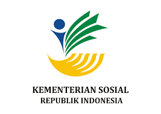
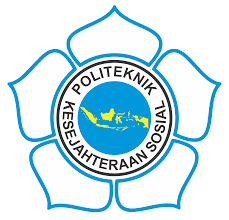

Tentang Kami
Social Camp adalah sebuah pusat pelatihan sosial yang mengintegrasikan pendekatan lingkungan hidup sebagai landasan utama dalam setiap programnya.
Cerita Kami
Mitra Kami



Social Camp membekali keterampilan sosial penting untuk mendukung masa depan berkelanjutan. Kami percaya dengan kemampuan berinteraksi dan kepedulian lingkungan, setiap individu bisa menjadi agen perubahan positif bagi masyarakat dan bumi.
Lihat Program KamiSocial Camp adalah sebuah pusat pelatihan sosial yang mengintegrasikan pendekatan lingkungan hidup sebagai landasan utama dalam setiap programnya.